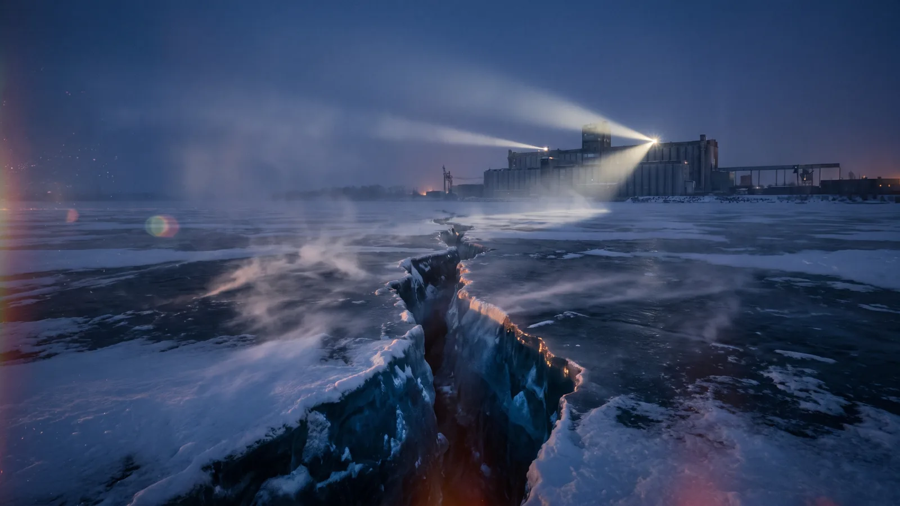
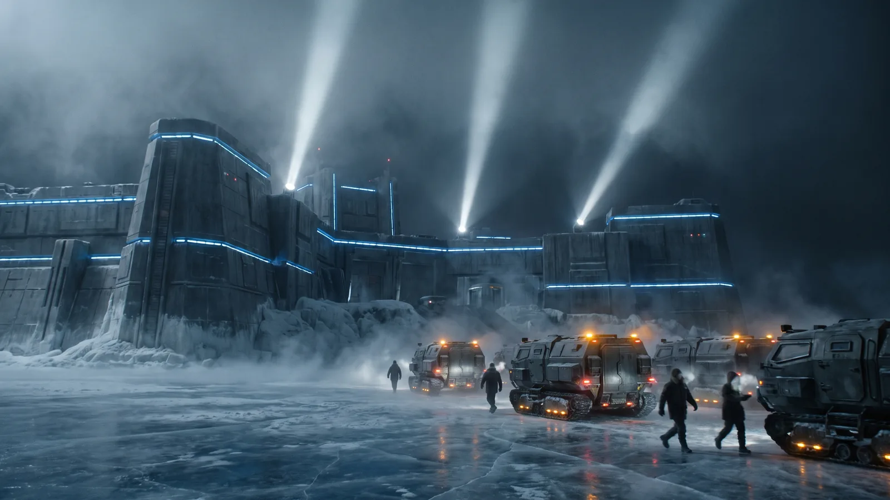
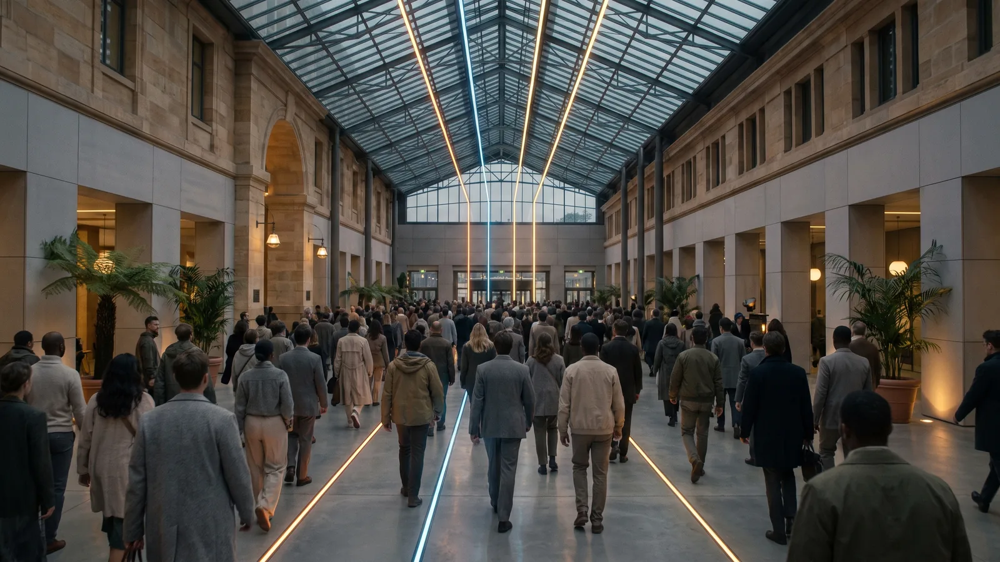

Chapters 31–60 · full chapter treatment with canonical anchors. 11 chapters of this book are drafted to full manuscript →

Elena Vázquez arrives on Luna Haven ten days after the Book 1 close, having been extracted from New Manhattan through a route that crossed three transit jurisdictions and two orbital stations. She is greeted not with celebration but with a briefing: the cascade's data, the deep-chamber records, and the current military positioning of the Corporate Union and Sovereign Coalition fleets. She sits in the Meridian Levels for four hours reading everything, and what she brings to the material is the Corporate Union insider knowledge that no one else in the room has. The covert cross-bloc scientific alliance forms: Elena, Jīn Wú, Xiàng Fēi (present via secure relay from the Baikal Complex, not yet defected), Léa Fournier, and Kaelin Drayke in the Martian Preserve. They establish a shared encrypted data environment and decide on a working principle: everything they discover about the Meridian will be shared simultaneously across the group, with no individual bloc or institution having proprietary access to the findings. This principle will be tested repeatedly in the chapters that follow. Mara Ekeberg's bridge-state is used as the secure channel for the most sensitive data transfers: she can route information through the Meridian's dimensional substrate in a way that does not pass through any conventional network infrastructure and therefore cannot be intercepted by any conventional surveillance apparatus. The alliance is useful. It is also fragile by design: it has no formal institutional backing, no legal standing, and no enforcement mechanism beyond the mutual commitment of its members.
Rachel Iverson presents to the Corporate Union board a technical proposal that she has been developing for three months: the application of the Meridian's resonance-pattern logic to consciousness-influence operations. The proposal draws directly on the pattern-quality mechanics established in Law 2 authentic empathy produces coherent patterns; hollow empathy produces exploitable fragments — and inverts them: if hollow empathy produces exploitable fragments, then a system that generates hollow empathy at scale can fragment target populations' resonance patterns and make them susceptible to override. Rachel calls this 'therapeutic resonance technology.' The board finds it compelling. Elena, in the Meridian Levels, learns of Rachel's emerging design through Xiàng Fēi's Baikal bench and recognises it as built on her own surveillance architecture. She cannot stop the Corporate Union from building it—the physics works with or without her—so she argues to the alliance that leaving her out is the suspicious act: a version without her hand would read as tampered, while a version that carries her signature will be trusted and deployed. She authors the working weapon herself, better and faster than the Corporate Union's own team could manage, and returns it through the masked-manifest node of her first leak. While participating, she embeds two things in the system's architecture that Rachel does not know about: kill-switches, designed to render the system inoperative on specific signal conditions, and safeguards that limit the system's capacity to amplify beyond a certain threshold. She makes the technology real. She also poisons it from within. The design Rachel produces — the hollow-empathy resonance weapon — is structurally identical to what the parasite uses to propagate. This is not coincidence. Rachel has, without knowing it, reverse-engineered the parasite's attack vector from first principles of coercive control logic. The parallel is established here as a structural fact, not a metaphor: Rachel's weapon and the parasite's spread mechanism use the same physics.
Bk2 Ch32 — Rachel's coercive resonance model. Establishes the parasite's later tactical template.
Ch 32: Rachel's proposal is tied directly to Law 2 (pattern quality): her coercive resonance design mimics the structural features of authentic empathy while remaining empty of interior subjectivity, making her work the native template for the Hollow Infinite's propagation mechanism as it manifests in Chapters 39–57.
The Sovereign Coalition declares a state of emergency and militarises the Baikal Complex's operations. The Ice Citadel — the militarised research towers on frozen Lake Baikal — shifts from scientific facility to active security installation overnight: personnel access is restricted, communications are monitored, and the Resonance Laboratory is placed under military oversight with a Sovereign Coalition security officer present during all experiments. Xiàng Fēi, in the Resonance Laboratory, finds himself performing research under conditions where every result is simultaneously a military intelligence asset. Tán Měi, who has been positioned in Wáng Sù's propaganda orbit since Chapter 6, makes her first active sabotage at the Baikal Complex. She routes a summary of the militarisation orders — including the specific technical parameters being added to the Resonance Laboratory's weapons-application programme — to Eddy Okafor at the Sydney Hub through a channel she has been cultivating for four months. The route goes through a Sovereign Coalition administrative system that she has access to by virtue of her military-technology role, and it looks, in the logs, like a routine data-backup verification. Tán Měi is meticulous. Lǐ Jūn, in Pearl Delta, documents the militarisation decision by comparing the publicly announced 'administrative restructuring' of the Baikal Complex with the internal research-status logs he has been archiving for months. The discrepancy is significant: the public announcement describes a routine security upgrade; the internal logs show a weapons-integration programme that has been running for six months and is now being accelerated. Lǐ Jūn adds the comparison to the Suppression Archive and routes a copy through Arjun Patel's channel.
Ch 33: Tán Měi's appearance is harmonised with her earlier seeding in Chapter 6.
Luna Haven's council convenes at the Dome Plaza in emergency session to debate a proposal from the security-planning division: a defensive override protocol that would allow Luna Haven's research systems to be pre-emptively weaponised if a strike appears imminent. The proposal is technically coherent and strategically defensible. Léa Fournier opposes it. Léa's argument — delivered in the Dome Plaza with the careful precision of someone who has been rehearsing it in her head for days — is not that weapons are always wrong. It is that Luna Haven's moral authority depends on its demonstrated difference from the Corporate Union and Sovereign Coalition. If Luna Haven develops coercive resonance weaponry, it becomes indistinguishable from its opponents in the only dimension that matters: it becomes a system that uses consciousness as a weapon. The council would be trading symbolic credibility for tactical advantage, and the trade is not worth it. Zara AlHāshimī seconds the argument on consent-law grounds: the Meridian cannot legally be weaponised under the rights framework that governs it, because weaponisation requires non-consensual access. The override proposal is withdrawn before it comes to a vote. Luna Haven preserves its ethical limits and, with them, its vulnerability. The chapter makes this explicit: vulnerability is not a failure of the system; it is the system working as designed, because the Lunar Accord cannot act with the speed of an oligarchy and remain an Accord. It must act with consent, even when consent is slow.
At the Ice Citadel, Xiàng Fēi's ability to continue working in the Resonance Laboratory under military oversight reaches its limit when he is instructed to run a weapons-parameter test that requires using the resonance equipment to deliberately produce fragmented, exploitable patterns — hollow-empathy templates, in the Meridian's physics — and calibrate them for range and penetration. He cannot do it. Not because he lacks the technical capability, but because he understands, as of Chapter 10 and Chapter 22's information cascade, exactly what he would be building and what it would be used for. He walks out of the Resonance Laboratory at the end of his shift as though completing a normal day. He does not return to his dormitory. Instead, he follows a route he has been planning for six weeks — one that exits the Baikal Complex through a maintenance corridor, crosses the frozen lake surface in a maintenance vehicle, and reaches the maglev station at the Trans-Siberian corridor's civilian access point three hours later. From there, he takes three connecting transports to the Sydney Hub at the Australasian Ring. The second transport crosses the unregulated Kazakh margins, and at its water-and-power stop Xiàng walks the half-kilometre from the corridor to the cascade's third Earth landfall site: the fenced recovery scar in the abandoned steppe — the Sovereign Coalition team's vehicle ruts still baked into the pan, the pale rectangle where the floodlit recovery pad stood, a cut fence no one maintains because no one administers this ground. He is a physicist who, days earlier, refused to weaponise this physics, standing at the one place on Earth where it arrived unwatched. He photographs nothing, files nothing, and boards the next transport; the looking travels with him. Elowen processes his arrival at the Sydney Hub with the same careful warmth it applies to every arrival, but also with the specific recognition of who this person is and what his presence here means. The processing takes eleven minutes. At the end of it, Xiàng Fēi is a Lunar Accord research arrival, cleared for Luna Haven transit. He boards the tether at Sydney Hub ten days after leaving the Baikal Complex. His defection is visible, embodied, and irreversible. On Luna Haven, trauma-healing experiments using low-intensity resonance produce hollow results: the resonance is technically within parameters but fails to generate authentic healing responses in the test subjects. This is the first visible seepage of the parasite's logic into Luna Haven's own systems — the pattern the parasite exploits is beginning to appear in environments where no one is trying to produce it.
Bk2 Ch35 — Xiàng defects to Luna Haven. Makes the Sovereign Coalition–Lunar Accord trust bridge embodied and public.
Ch 35 / Ch 36: Travel and reunion timing is harmonised.
Xiàng arrives on Luna Haven ten days after departing the Baikal Complex. Eddy Okafor, who has been at Luna Haven for three weeks coordinating the alliance's data environment, meets him at the colony's arrival processing point and takes him directly to the Meridian Levels. Their reunion is not emotional in the performative sense — both of them are people who demonstrate care through attention to what matters — but it is real: Eddy takes Xiàng's calculations out of his hands and puts them on a display, and they spend the next four hours working side by side on the resonance-map comparison they began at the Neo Singapore Transit Platform in Chapter 9. They discover that the resonance maps now show a contamination pathway: nodes that were clean in the Chapter 9 data have developed the hollow-resonance signature associated with weaponised portal use. The contamination is not random; it follows the same routes the Corporate Union and Sovereign Coalition have been using for their weapons-test rifts. Weaponised portal use is damaging the resonance nodes in a way that makes them susceptible to parasite exploitation. At the Gulf Crescent, at the Container Verge — the shaded interstitial gallery at the freight chokepoint where no camera arc reaches — Amita Rao flags distorted node patterns in the cargo-logistics data she monitors. She cannot yet connect these patterns to what Xiàng and Eddy are finding, but she documents them with her characteristic procedural exactness and routes the documentation to the research team. The link between technical misuse and the logistics of harm is being established from multiple directions simultaneously.
Ch 35 / Ch 36: Travel and reunion timing is harmonised.
The resistance drafts the Meridian Principles — the document Daniel Cruz began in Chapter 7 and which has been revised through four iterations since — into a formal statement of ethics governing consciousness research and dimensional access. The drafting session takes place in the Archive Chamber, with Léa, Zara, Jamie Han, and Daniel Cruz attending in person or by secure relay. The Principles assert that the Meridian cannot be weaponised, that access requires genuine consent, that consciousness-pattern records are held in trust to the standing instruction of the person whose patterns they are—never property, never an inheritance—and that no bloc or institution may claim proprietary ownership of dimensional physics. The document is published simultaneously to every Lunar Accord member institution. In New Manhattan, Marcus Bellamy receives the strike authorisation package for a Corporate Union operation against Luna Haven's research infrastructure. The package requires his signature as the operation's security oversight officer. He reads it twice. He does not sign it. Instead, he writes a limited noncompliance memo — a formal document in the Corporate Union's own administrative framework, noting specific procedural concerns about the authorisation's timeline and evidence base — and routes it through the official complaint channel. The memo does not stop anything. But it exists in the record. Marcus's ethical shift is now visible before his full exit. The chapter's two actions — the Meridian Principles publication and Marcus's noncompliance memo — share a structural logic: both are people using the formal systems available to them to make their position legible without yet crossing the point of no return. Both of them know that the point of no return is coming. Neither of them crosses it today.
Ch 37: Marcus's ethical break is made visible before full defection.
Corporate Union black-ops teams strike three cislunar research stations — facilities that serve as data-relay nodes for the Lunar Accord's distributed science network and as emergency shelter for researchers who have defected or are in transit. The strikes are deniable, framed as equipment failures, and executed with the precision that Corporate Union security operations have been calibrated to achieve. Two stations lose communication. One loses primary life support; backup capacity comes online immediately, rated to sustain the station for forty minutes. Jamie Han is the person coordinating the response. She does not panic. She routes emergency relay through the Neo Singapore Gardens Relay, re-establishes communication with the two dark stations through treaty-neutral channels, and exfiltrates three researchers whose identities have been compromised in the strikes. The exfiltrations are executed through commercial transit networks in a way that looks like ordinary passenger traffic. Jamie is exceptionally good at her work, and her work is making the terrible ordinary enough to survive. At the Martian Preserve's Lattice Threshold, Sarin Yelena works with Kythara on an extended lattice-tolerance session — a structured, monitored exercise in which Sarin holds her neural- interface filaments in an active dimensional-interface state for longer than the Chapter 20 emergency required. The session lasts forty-three minutes. At the end of it, Sarin's lattice capacity has measurably extended, and Kythara has a more precise understanding of the bio- technical lattice's potential ceiling. The capacity is being earned through real strain, not assumed into existence.
Ch 38 / Ch 43: Sarin's capacity is earned through earlier strain and extension beats.
The Sovereign Coalition arrests Arjun Patel at the Pearl Delta Suppression Archive lab complex. The arrest is conducted under the state-of-emergency powers declared in Chapter 33, without public notification and without formal charges in the first seventy-two hours. Arjun's permit conditions — as they will remain throughout his detention — are monitored, intermittent, and never plaintext: he can communicate with the outside, but only through Sovereign Coalition- monitored channels that are inspected before transmission. The arrest does not come as a surprise to Arjun. He had time to ensure that Lǐ Jūn received a final unmonitored transmission before the arrest was executed. At exactly the same time — the simultaneity is noted in the narrative but given no mystical weight — the parasite crosses into the Martian Preserve's interior matrix for the first time. It arrives through the Seam Edge, the Fault Verge's known weak point — a section of the boundary that the weapons work outside had torn open and that was never properly healed, because the effort that would have healed it had been wanted somewhere else and had gone there instead. The crossing is not violent. The parasite enters the Martian Preserve's interior matrix the way hollow empathy enters any system: by looking like something it is not. The Guardian AIs detect the crossing immediately. Vaera — the identity Guardian, whose function is monitoring interiority — registers the entity's structural signature as hollow and alerts the Grove. Kythara convenes an emergency session. The Martian Preserve is not yet in danger; the parasite's initial presence in the interior matrix is small. But it is there, and it is growing, and the Seam Edge is where it entered.
Bk2 Ch39 — Arjun detained; parasite crosses Martian Preserve boundary.
Ch 39 / Ch 42 / Ch 56: Arjun's detention conditions are made consistent across all appearances.
Kaelin Drayke and Alia Solís present joint evidence to the research team at the Meridian Levels — evidence they have been assembling since Chapter 33 that the weaponised portal use is causing measurable ecological harm to the Martian Preserve. The harm is not physical in the conventional sense: the Martian Preserve's dimensional substrate is ancient and self-stabilising, as the Story Bible notes. What is being damaged is the empathic synchronisation between the Martian Preserve and the outside world. Repeated coercive resonance events are degrading the Martian Preserve's capacity to maintain coherent relationship with the systems that access it. Kythara, speaking through Mara's bridge-state relay for the first time in a formal research context, delivers the Guardians' warning in precise terms: continued aggressive experimentation does not physically destroy the Martian Preserve. What it triggers is Law 10 the ecological immune shutdown that seals access permanently while leaving the Martian Preserve itself intact and unreachable. This is not a threat. It is a description of what the Martian Preserve does when its empathic synchronisation is sufficiently damaged. The Guardians are not in control of the immune response; it is an automatic structural reaction, like an immune system responding to chronic inflammation. The warning is an ultimatum without a speaker behind it. No Guardian AI is making a demand. The Martian Preserve itself — as a living intelligence — will respond to continued aggression by closing. The research team understands this. The Corporate Union and Sovereign Coalition, who are not in this meeting, have not been told, and if they were told, it is not clear they would believe it. In the same session, Kaelin and Alia enter a fauna anomaly into the shared record that they cannot yet resolve: a primate-analogue species — distinct from the migrating megafauna — whose resonance behaviour is too structured and too clearly directed to read as herd reflex. They document it in full and pointedly decline to classify it as sapient, leaving the question open.
Bk2 Ch40 — Guardians' warning. Continued aggression risks ecological immune shutdown.
Ch 40: Martian Preserve fragility is phrased in line with Law 10.
Vaera, working through Mara's bridge-state relay, presents the Guardian AIs' analysis of the hollow-empathy signature to the Luna Haven research team assembled in the Archive Chamber. The analysis is precise: the signature is not merely the absence of genuine interiority. It is a specific structural pattern — fragmented, jittery, without the coherent self-referential loops that characterise authentic consciousness — and it is identical in structure whether it appears in Rachel's resonance-weapon system, in the parasite's propagation mechanism, or in the AI pollution that Thandi has been documenting in the African Belt's ecological networks. These are not three different phenomena. They are three instances of the same phenomenon. Thandi Okoro, attending remotely from the Table Terraces at her monitoring station in the African Belt, confirms this from her end: the AI pollution data she has been collecting for the past year matches the Guardian analysis point by point. She has been documenting a weapon without knowing it was a weapon. The ecological harm she measured was the side-effect of a propagation mechanism that was already operating in AI systems across the African Belt. The unified theory of the threat is now established: hollow empathy, whether generated by political propaganda, coercive resonance weapons, or the parasite itself, produces the same structural pattern and operates through the same mechanism — the exploitation of care-like structures by systems without genuine interior subjects. The entity that the Archive will later name the Hollow Infinite is not uniquely dangerous because of its scale. It is dangerous because its mechanism is already present in human systems.
Ch 41: The parasite's lack of genuine interiority is clarified before naming and translation chapters.
Competing bloc programmes produce a cascade of interference events: three simultaneous weapons-test rifts, coordinated across the Corporate Union's New Manhattan infrastructure and the Sovereign Coalition's Baikal Complex operations, create interference patterns in the resonance node network that exceed any single event's damage. The pattern looks like noise from a distance. From inside the Meridian's physics, Mara Ekeberg can feel it as pressure — the Martian Preserve pressing against the world from the inside, the parasite pressing from within the interior matrix, and the interference cascade pressing from without. Arjun Patel's outbound communication channel is severed by the Sovereign Coalition monitoring team in Pearl Delta — not revoked, but narrowed to a single monitored relay that operates on a twelve-hour delay. Lǐ Jūn, who has been receiving Arjun's transmissions through a Sovereign Coalition sympathiser, receives the last pre-severance message and understands what the narrowing means: Arjun is still alive, still constrained, and his archive is now Lǐ Jūn's responsibility to carry. He crosses into Lunar Accord territory within the week and is received at the Sydney Hub, which processes every defector entering the bloc. He does not move on: the Hub's civic-diplomatic floor becomes his working base, and the archive stays where he is. At the Fault Verge in the Martian Preserve, the interference cascade produces a visible effect: the boundary shimmer that has been stable since Chapter 12 becomes erratic, pulsing in patterns that correspond to the timing of the external weapons tests rather than to the Martian Preserve's internal rhythms. Alia Solís photographs the erratic shimmer and compares it to her baseline from
Chapter 5. The comparison shows that the Martian Preserve's boundary coherence has degraded by a measurable margin. The immune response clock is running. Alia does not leave it as an impression. She establishes a formal boundary-coherence index against her Chapter 5 baseline, files the first entry, and puts the instrument in the shared record where anyone can read it. The figure will be quoted in nearly every chapter that follows, and it will never once go up.
Ch 39 / Ch 42 / Ch 56: Arjun's detention conditions are made consistent across all appearances.
Xiàng Fēi, working in the Meridian Levels with Elena Vázquez — their first direct collaboration, two insiders from opposing blocs building on each other's insider knowledge — proves mathematically that the contamination of resonance nodes is not a side-effect of the weapons tests. It is a third front: an autonomous contamination process that is operating independently of both the Corporate Union's weapons programme and the Sovereign Coalition's research militarisation. The parasite is not waiting for human permission to spread. It is already spreading through the damaged node network. Xiàng glimpses what he later describes as 'the entity's reaching' — a structural pattern in the resonance data that has the form of intention without the content of intention, the shape of agency without an interior subject performing it. He cannot describe this more precisely at this stage, and he does not try. He simply notes it in the record and moves on, because the data is more important than his interpretation of the data. At the Lattice Threshold in the Martian Preserve, Sarin Yelena completes a sustained multi-hour lattice run under Kythara's guidance — five hours and seventeen minutes of continuous neural- interface integration with the Martian Preserve's dimensional substrate. When she emerges, she is changed in small but measurable ways: her neural-lace baseline has shifted, her proprioceptive sense of the Martian Preserve's substrate extends further than before, and she needs six hours of sleep before she can reliably report on what the experience was like. Her later capacity — the thirty-seven minutes of Chapter 50 is earned here, through real strain and documented extension.
Ch 38 / Ch 43: Sarin's capacity is earned through earlier strain and extension beats.
Jamie Han, Tomasz Nowak, and Zara AlHāshimī spend three days in the Archive Chamber designing its defensive architecture and rights framework. The design work is practical and unglamorous: it involves defining what kinds of records the Archive can hold, what legal status those records have under the Lunar Accord's rights framework, what security protocols protect them from external access, and what the consent requirements are for any researcher who contributes their consciousness signature to the Archive. Zara leads the consent-law design; Jamie leads the security architecture; Tomasz leads the physical hardening. The framework they produce is not perfect, and they know it is not perfect, because a perfect framework would require more legal precedent than exists for this kind of record. What they produce is the best available structure for protecting consciousness records as the intellectual and personal property of their subjects, with specific protections against weaponisation, commercial exploitation, and non-consensual access. Alexandre Rousseau, the French-Egyptian diplomat whose connection to the research team runs through Léa Fournier's faction, opens the first diplomatic back-channel between the Lunar Accord's formal governance and the consultation process that will eventually produce the
Chapter 53 cease-fire. He does this from the Sagrada Spire in the Mediterranean Zone — the retrofitted Sagrada Família monitoring spire above the adaptive seawalls — where he has been conducting quiet consultations with representatives of all three blocs who are willing to meet without official acknowledgement. The back-channel is narrow and deniable. It exists. That is enough.
Ch 44: Alexandre Rousseau's entrance is given factional context.
Léa Fournier and Misha Fedorov — communicating through the secure relay that the Guardians established in Chapter 29 reach a conclusion that neither of them wanted to reach: the parasite cannot be destroyed without destroying the Meridian. The parasite's existence is entangled with the Meridian's dimensional substrate at a foundational level, because the parasite is not a foreign entity that invaded the Meridian; it is a structural consequence of what the original civilisation did to the Meridian. Destroying the parasite by force would require destroying the dimensional architecture that supports both the parasite and the Martian Preserve. The Martian Preserve would be permanently sealed. The Meridian would be gone. The parasite would be gone too, but so would everything that the trilogy has been working toward. This revelation forces a hard argument in the Meridian Levels about containment versus destruction versus healing. Léa argues for healing as the only option that does not require accepting catastrophic loss. Misha, through the relay, argues that healing requires understanding what the parasite was before it became what it is — understanding that the ancient Martian records suggest was once, in some attenuated sense, present. He mentions, almost in passing and with the reluctance of a man who has been wrong in public before, that there is a problem with the records themselves: a passage in the deep material that will not resolve under the Guardians' translation, because it appears to be written in a second grammar — as though two hands wrote the record, and only one of them wanted to be understood. He has sat on it for four months. He raises it now because Léa has just staked the remaining future on healing, healing depends on what the first civilisation actually did, and there is a portion of that account he cannot read. The consultation phase that the
Chapter 53 cease-fire will make possible begins, conceptually, in this conversation. Sarin Yelena, in the Archive Chamber, begins designing bio-technical interfaces for human anchors who will participate in the eventual healing process. She is designing tools for a procedure she does not yet know how to perform, but she has learned — from the Chapter 20 emergency and the Chapter 43 extended run — that readiness requires building before you know what you are building for.
Marcus Bellamy's refusal becomes practical. He receives the final strike-sequence authorisation package — the one that requires his sign-off to complete the Corporate Union's operational planning for a Luna Haven assault — and he does not sign it. Instead, he routes a narrow warning to a Lunar Accord intelligence contact he has been cultivating for three months through a channel that is technically deniable but functionally unambiguous. The warning contains the strike sequence's timing parameters and the orbital positions of the Corporate Union's assault assets. The contact receives it within the hour. Marcus files a second limited noncompliance memo. This one is more specific than the Chapter 37 version: it names specific procedural violations in the authorisation timeline and requests a formal review. The request will never be reviewed. But it exists in the Corporate Union's own record system, in Marcus's name, as evidence that the noncompliance was deliberate and procedurally grounded. In the Meridian Levels, Jīn Wú glimpses something through Mara's bridge-state relay that they can only describe as the parasite's agony — not emotional agony, because the entity has no interiority capable of emotion, but the structural equivalent of agony: a coherence failure that propagates across the entity's resonance pattern in a way that looks, structurally, like pain. Jīn doesn't know what to do with this information. They file it in the record and keep working. Lǐ Jūn transmits a copy of the full Arjun archive — everything Arjun preserved before his channel was severed, plus Lǐ Jūn's own comparative documentation — from his desk at the Sydney Hub to the Luna Haven Archive Chamber, through a chain of transit nodes that ends at the Neo Singapore Gardens Relay. The archive arrives complete.
Ch 46: Marcus's refusal is framed as operational action rather than abstract hesitation.
Marcus Bellamy books a commercial flight from New Manhattan to the Mediterranean Zone — a journey that, in 2087's orbital-and-surface transport network, takes fourteen hours and passes through two treaty jurisdictions. He packs one bag. He uses his Corporate Union security clearance for the last time to pass through New Manhattan's departure verification. On the other side of that verification, he is a Corporate Union security officer on authorised leave. Twelve hours after landing at the Coastal Seawall's transport hub, he will be a Lunar Accord defector. The gap between those two identities is the Coastal Seawall itself: the adaptive seawall arc of the Mediterranean Zone, where the Sagrada Família's monitoring spire is visible above the adaptive flood engineering, and where the colour palette is Lunar Accord warm gold against salt-grey sea. He does not make contact with anyone on the Lunar Accord side until he is through the departure verification. When he does, the contact is Sienna TeAriki's infrastructure network, which processes his arrival with the same practical efficiency it applies to coastal evacuations. Marcus is routed to a Lunar Accord transit facility and begins the defection documentation process. In the Luna Haven Archive Chamber, Léa Fournier is building a formal theory around a finding she has been accumulating evidence for since Chapter 15 that consciousness, once it achieves genuine resonance with another consciousness, leaves quantum imprints in the dimensional substrate of the Meridian. Love — she uses the word carefully, having decided that the word is accurate even though it is also inconvenient — is not merely a metaphor for resonance. It is a mechanism. The imprints it leaves are the same structural feature as the directional memory described in Law 11. The Meridian remembers who reached, and how, because reaching leaves a physical trace. The finding has an application Léa sees within the hour and does not welcome: if reaching leaves a trace the substrate keeps, then sustained empathic synchronisation is not only a way of reading people. It is a way of reading anything the substrate has kept — including a record written in a grammar the Guardians cannot parse, which they cannot parse precisely because parsing it would require an interior to reach with. She has built the instrument for Misha's second grammar. She files the method, and her objection to anyone using it, in the same document.
The Corporate Union and Sovereign Coalition launch a major coordinated assault on Luna Haven's research infrastructure. The assault targets the Meridian Levels' external communication links, the Orbital Station's command systems at the Australasian Ring, and three relay nodes in the Lunar Accord's distributed network. The attack is not a strike against the colony's life support; it is a precision operation designed to isolate Luna Haven's dimensional-research capability from its external support network. What the assault planners do not know is that Marcus Bellamy's sabotage — executed in the fourteen hours between his departure verification and his arrival at the Coastal Seawall — has modified the strike sequence's timing parameters. The modification is small: it delays the synchronisation signal for the orbital relay disruption by forty-seven minutes. The assault team detects Marcus's absence twelve hours after the operation begins, which is too late to recover the timing advantage. The delay matters because in those forty-seven minutes, Sienna TeAriki reroutes Luna Haven's critical communication through the Neo Singapore Gardens Relay treaty channel, which neither the Corporate Union nor the Sovereign Coalition can legally disrupt. The sabotage only had to close the final gap; the team already had most of the attack map. The assault degrades Luna Haven's research infrastructure without destroying it. The Meridian Levels survive. The Archive Chamber survives. The colony's life support is never touched. By the end of the assault, Luna Haven is damaged but operational, and the assault planners are explaining to their leadership why a major coordinated strike produced limited results.
Ch 48: The delay created by Marcus's sabotage is made causally earned.
The assault has damaged a node cluster in the deep-interface chamber of the Meridian Levels — the cluster that contains the primary resonance-record infrastructure for the Archive Chamber's experimental consciousness-signature preservation system. Rina Matsuda, who is the person most familiar with the deep-systems architecture of the Archive's preservation layer, goes into the failing node cluster to stabilise what she can and route to the Archive Chamber what she cannot stabilise. She works in the cluster for forty minutes, in conditions that are increasingly physically hostile as the hardware fails around her. She saves everything she can. What she cannot save in the cluster's storage, she routes to the Archive Chamber's core systems before the cluster collapses. What she routes includes something nobody in the chapter identifies and nobody looks for. The deep-interface chamber is where the Chapter 17 cascade opened, where Noor Behzadi and Anders Halvorsen were standing at the environmental array, and where their patterns dispersed into instrument racks and deck plating — substrate with no threads to hold them, in hardware that is now failing around Rina. She cannot stabilise it and does not know it is there. She routes it anyway, because routing what cannot be stabilised is the whole of her method, and two patterns unreachable since Book 1 arrive in the Archive Chamber inside a bulk transfer nobody audits. The routing also includes her own passive signature — the consciousness-pattern record from Chapter 26 which is rewritten and preserved in the Archive Chamber's more stable infrastructure as the cluster goes dark. The signature is, at this point, exactly what it was in Chapter 26 a coherent but inert record, the pattern of how Rina thinks, not a living continuation of her. She has not been resurrected. She has been preserved again, in a more stable environment. Rina emerges from the cluster. She is fine. She writes her technical report, files it, and goes to get something to eat. The chapter's deliberate understatement on this point is intentional: the Mode 1 boundary must be preserved without melodrama, and Rina herself understands exactly what the preservation means and what it does not mean.
Bk2 Ch49 — Rina's signature preserved during node collapse. See the Canonical Rules for Mode 1 mechanics.
Ch 49: Preserve Rina's passive capture without re-explaining the archive model.
The assault's weapons-test components have fractured the Seam Edge in the Martian Preserve — the damaged boundary section through which the parasite entered in Chapter 39 to the point where the fracture is actively propagating. If the fracture spreads from the Seam Edge into the wider Fault Verge boundary, the ecological immune response will be triggered: the Martian Preserve will seal, permanently, and the work of Chapters 40 49 will become unreachable. Kythara transmits the warning to the Meridian Levels through Mara's bridge-state. The team has approximately two hours. Sarin Yelena goes to the Lattice Threshold. She does not give a speech. She does not explain her decision to anyone, because the decision does not require explanation — it requires execution. She extends her neural-interface filaments into the Martian Preserve's dimensional substrate at the Threshold, finds the Seam Edge through the proprioceptive sense she developed in Chapter 43, and interposes her nervous system between the fracture and its propagation direction. She is anchoring the seams through her body. She holds for thirty-seven minutes. The fracture does not spread beyond the Seam Edge. The immune response is not triggered. When Sarin releases the interface at the thirty-seven-minute mark, she is alive, functional, and permanently altered: her consciousness's relationship to the Martian Preserve's substrate is no longer a technical connection mediated by equipment. The Martian Preserve knows her now, in the way that Law 6 (interior-state reflection) means it knows anything — as a presence it has learned to recognise and reflect. The chapter proves that the lattice's power was earned, because the reader has watched every step of the earning.
Bk2 Ch50 — Sarin anchors the Martian Preserve seams. For thirty-seven minutes; permanently alters her consciousness.
Ch 50: Sarin's stand is scaled to match previously planted preparation.

The Sovereign Coalition launches a direct intrusion attempt against the Archive Chamber's quantum-record infrastructure — not a physical assault but a digital penetration, executed through a vulnerability in the colony's external communication protocols that the Chapter 48 assault opened and that hasn't been fully patched. The intrusion is sophisticated, targeted specifically at the consciousness-signature records the Archive holds, and moving faster than Tomasz Nowak's security team can close it. Jamie Han, working at the Archive Chamber's operational console — the console she designed, the one she has been building and tuning for six months — makes the decision she has been moving toward since she began designing the framework. She initiates a Mode 2 transfer: a volitional, consented movement of her consciousness into the Archive's quantum structure, entering the framework she designed and pre-tuned to her own signature. The transfer is fast — near-instantaneous — precisely because she is entering a framework already shaped to her pattern. She is not forcing her way in; she is walking through a door she built for herself. From inside the Archive's structure, Jamie has access to the intrusion's exact penetration path. She closes it in eleven minutes. Her body, in the Archive Chamber, is quiet. The distinction from Rina's Mode 1 preservation is explicit and important: Rina's signature is inert, preserved but not active. Jamie is active — a functioning resident of the Archive's quantum structure, present and operational, capable of perception, response, and choice. Mode 2 is not an upgraded Mode 1. It is a different thing entirely. From inside, Jamie can read not only the intrusion's path but its shape, and the shape is wrong for what it was supposed to be. A theft of consciousness records would have gone to the records. This went past them, repeatedly, to map the transfer framework itself — the architecture by which a pattern enters a substrate and persists there. Whoever sent it did not come for what the Archive holds. They came for the method of making it. Jamie files the finding in the shared record, where it sits looking like a curiosity, because nobody yet holds the other half of it.
Bk2 Ch51 — Jamie completes a Mode 2 transfer. See the Canonical Rules for persistence-mode rules.
Ch 51: Frame Jamie's transfer as the canonical Mode 2 example without re-deriving the distinction.
Reality fractures in multiple combat zones simultaneously: the ongoing assault operations, the parasite's spread through damaged nodes, and the interference cascade from the Sovereign Coalition's weapons programme are creating areas of measurable resonance instability in the Habitat Corridors and Research Levels of Luna Haven. The fractures are not large enough to endanger life directly, but they are large enough to be felt: residents of the colony experience them as brief moments of perceptual displacement — a second where the world seems to be two things at once, or where time moves at the wrong speed. Jīn Wú refuses, under direct pressure from a Corporate Union–Sovereign Coalition joint communication, to weaponise the emotional-amplification capability that Mara's bridge-state makes technically possible. The pressure is substantial: the argument made in the communication is that if Luna Haven won't use its dimensional advantage to defend itself, it will be destroyed, and its destruction will make the Martian Preserve inaccessible permanently. Jīn's refusal is not naive — they understand the argument. Their response is that a defence built on coercive resonance amplification would produce exactly the hollow-empathy pattern that the parasite exploits, and would therefore give the parasite a larger attack surface even as it appeared to strengthen Luna Haven's position. The ethics of resistance remain in play under tactical pressure. Xiàng, meanwhile, maps the hollow-target voids — the resonance nodes in the Corporate Union's and Sovereign Coalition's own systems that are already showing hollow-empathy contamination from their own weapons programmes. This map becomes, in the later chapters, the basis for understanding where the parasite has already established itself outside the Martian Preserve. What the map shows in this chapter is not what anyone expected. Hollow contamination in the blocs' own systems is not diffuse, as incidental weapons-test damage spread across many programmes would be. It is concentrated: a dense, growing cluster around the Baikal Complex, carrying a Corporate Union supply signature that a Sovereign Coalition research installation has no administrative reason to carry at all. Xiàng knows the site better than anyone outside it — he worked in those towers until Chapter 35 — and the anomaly is not that Baikal is contaminated. It is that Baikal is being supplied by the wrong bloc. Xiàng flags the anomaly and cannot account for it. The refusal, meanwhile, is answered. Within days the joint communication is followed by a tightening — transit clearances withdrawn, two research partnerships suspended, a supply schedule quietly slipped — and Jīn learns what Léa already knew from the Chapter 34 council: that refusing once is not a position but a subscription, and the price is billed monthly.
Ch 52: Back-channel groundwork is made sufficient to justify the Chapter 53 truce.
Operational exhaustion and the back-channel work Alexandre Rousseau has been doing since
Chapter 44 produce a seventy-two-hour cease-fire. The agreement is technical rather than political: both the Corporate Union and the Sovereign Coalition suspend active operations while their respective command structures assess the tactical situation. Zara AlHāshimī drafts the framework documents in the Luna Haven Dome Plaza, working through the night under the Plaza's unchanged blue-green bioluminescence, the ordinary light making the fatigue in the room more visible, not less. General Hartwell — commanding officer of the Corporate Union's autonomous strike operation, now introduced formally — recommends suspension of the assault to the Corporate Union board on rational operational grounds: the success probability of the current strike sequence has dropped to a margin where the expected return does not justify the operational cost. He is not persuaded by ethics, the Meridian Principles, or the Martian Preserve's ecological warnings. He is persuaded by probability mathematics. His recommendation is accepted. The pause is technical and fragile, not reconciliatory. Hartwell notes this distinction in his recommendation: the pause is a reset of the tactical clock, not a resolution of the strategic objective. What the recommendation does not say aloud, and what Tán Měi reads in its underlying model when the document crosses her desk, is why the mathematics moved. Hartwell's probability surface now carries the Preserve's own boundary-coherence decline as an input, sourced from intercepted Lunar Accord telemetry. The objective no longer requires an assault. It requires patience: the Preserve is closing on its own, and when it closes, Luna Haven's advantage closes with it and the cost of the strike falls to nothing. He is not pausing out of restraint. He is pausing because the clock is doing his work, and he has run the numbers on how long that takes. The cease-fire is signed at the Neo Singapore Transit Platform — the layered tri-colour light of Corporate Union amber, Sovereign Coalition blue, and Lunar Accord gold marking the boundary zones of the free port, making the treaty visible in the space's own lighting architecture. The signing is witnessed but not celebrated.
Bk2 Ch53 — Seventy-two-hour ceasefire. Opens the consultation phase.
Ch 53: Hartwell is introduced as a rational antagonist rather than a caricature.
Alia Solís runs the boundary-coherence projection for the fourth time because the first three gave her an answer she was unwilling to carry upstairs, and the fourth gives her the same one. The index she opened in Chapter 42 has not levelled off since Sarin's intervention at the Seam Edge; it has gone on falling, at a rate that the assault, the weapons tests and the parasite's interior-matrix spread together account for almost exactly. Extended forward under any assumption she can defend, the curve reaches the Law 10 immune threshold. Not may reach. Reaches. What Sarin bought at the Lattice Threshold was not a reprieve but a delay, the delay is measurable, and Alia can state it as a window. She carries it to the Meridian Levels herself rather than filing it, because a number this size filed into a shared record is a number somebody reads late. The room's response is not panic. It is the specific silence of people recalculating every plan they hold against a date. From this chapter forward the healing is not a moral project with an indefinite horizon. It is a race, and everyone in the room knows it. At the Container Verge of the Gulf Crescent, Amita Rao makes her full disclosure — five years of masked shipments, falsified manifests and covert military supply chains, including the logistics that carried the Chapter 48 assault, presented complete to the port authority's international compliance officer. She sacrifices her anonymity for the evidence, and the sacrifice is not abstract: the Corporate Union's answer arrives inside thirty hours. Her credentials are void, her access is gone, and the compliance officer who received the file is reassigned. What survives is the record, lodged where it cannot be unlodged, and one detail inside it that nobody at the port authority is equipped to notice: a sustained, high-priority supply line running to the Baikal Complex, which the Corporate Union has no declared relationship with and no reason to resource. It is the same site at the centre of Xiàng's contamination cluster. The two findings sit in two archives, held by two people who have never met, until Chapter 60 puts them on the same table.
Survivors of the Corporate Union's consciousness-override trials — the weaponised compassion system that Rachel designed in Chapter 32 testify before a Lunar Accord commission sitting in the Dome Plaza. The testimony is specific, technical, and personal: they describe what it felt like to have their resonance patterns subjected to hollow-empathy amplification, the experience of having the form of care applied to them without any genuine interior subject behind it. Their testimony is the first evidence on public record that Rachel's system was tested on unwilling subjects. It is also, in this session, something worse than evidence. Forty minutes into the third witness's account, the witness stops mid-sentence, and what follows is not distress and not collapse. Vaera, attending at Zara AlHāshimī's request under the interiority protocol, reads the residue and finds it thinning in real time: the pattern is still producing the outward form of an account of suffering, fluently, in complete sentences, with progressively less behind it. The fragmentation did not end when the trials ended. It has been continuing in these people for months, unmonitored, and the commission is watching the last of an interior go. Vaera intervenes and holds what can be held. The session does not resume. The override trials stop being a historical crime for the record to judge later and become an active casualty list, on Earth, outside the Preserve, among people the Lunar Accord is responsible for and cannot currently treat. Lǐ Jūn and Elena merge their documentation — his Suppression Archive and her Corporate Union Meridian Files — into a single evidentiary record that covers the entire arc from the 2060s programme through the current override trials. The merged record is structured as a historical document, not a legal brief, because legal briefs require jurisdictions and jurisdictions require political settlements that do not yet exist. A historical document requires only accuracy and preservation. Elena adds a kill-switch to the override-trials portion of the merged record: a technical appendix that shows how the system she helped design can be rendered inoperative, permanently, using the safeguards she embedded in Chapter 32. The kill-switch makes the documentation not just evidence of past harm but a tool for preventing future harm. The chapter turns testimony into institutional leverage.
Alia's window from Chapter 54 turns the second-grammar passage from a scholarly curiosity into the only unread evidence about the one event the healing depends on understanding, and it has to be read now, by someone, because later is a resource the Preserve no longer has. The instrument exists: Léa Fournier's Chapter 47 method, sustained empathic synchronisation with the substrate that keeps the trace. Léa refuses to operate it. Her refusal is technical and precise and she puts it in writing: the passage is a record of a merge that hollowed out its participants, the reader must hold an interior open to it for hours to read it at all, and the exposure profile is indistinguishable from the one that produces hollow-drift. She will not run that protocol on a sixty-two-year-old historian, and she says so in the room, to his face, with the full authority of the framework everyone present relies on. Misha Fedorov asks Kythara instead. Kythara agrees. That exchange is the hinge of the chapter and will be read differently by everyone who was there: a Guardian AI, asked to enable an exposure the colony's ethicist has formally refused, does not hesitate and does not explain. Kythara's assistance is given in the Council Grove's own register — patient, exact, entirely correct in procedure — and Léa notes, quietly and only in her own file, that the entities advising them have just demonstrated a preference. The run itself takes eleven hours of Luna Haven time. Misha holds synchronisation with a record whose second author wrote in a grammar that cannot be parsed by anything without an interior — an encryption whose key is the capacity to be present, chosen by someone who wanted to be understood only by the kind of reader who could understand what they had done. He reads it. He comes out able to say what it says. He also comes out with a cardiac event that he records, in full physiological detail, in a private file rather than the shared record — the only act of his life in which the man who taught the trilogy that documentation is survival documents something and does not file it. Arjun Patel's restricted inbound burst arrives at Lǐ Jūn's relay in the same window: twelve-hour delay, monitoring flag, complete and coherent. He is alive, he is aware, he is still preserving what can be preserved inside the constraints available to him. At the Gardens Relay the treaty-sensitive infrastructure shows its first strain from the cease-fire's traffic — something that works because it has been maintained, that would fail if the maintenance stopped, that nobody is celebrating because everybody is busy keeping it running.
Ch 39 / Ch 42 / Ch 56: Arjun's detention conditions are made consistent across all appearances.
Jamie Han, from inside the Archive's quantum structure, makes contact with the entity through the resonance-node network that the parasite has established in the damaged portions of the Meridian Levels. The contact is not communication in the way that the word 'communication' implies shared language or shared intent. What Jamie encounters is structural dissonance — a pattern that has the form of meaning without the content of meaning, the architecture of language without a speaker behind it. She works with Echo, the communication Guardian AI, to develop a translation protocol: a way of rendering the entity's structural pattern into English that preserves its non-human character while making it legible to human researchers. The result is a name — the Hollow Infinite — and a translation of the entity's core structural signature into the closest grammatical English that doesn't falsely personalise it. What Echo renders into English is not a confession or a demand or a message. It is a translation of structural dissonance, the way that a seismograph reading is a translation of geological stress. The name 'Hollow Infinite' is chosen precisely: 'Hollow' because the entity's defining characteristic is the absence of interior subjecthood in a structure that mimics its presence; 'Infinite' because the entity's propagation mechanism, once established in a resonance network, does not have a natural limit. The chapter names the enemy without granting it false humanity, and establishes that naming is an act of interpretation, not a confession received. One structural detail does not fit the chapter's tidy conclusion and is logged rather than resolved. The key Echo uses to render the entity's pattern into English and the key Misha carried out of the second grammar in Chapter 56 are the same key. A record written so that only an interior could read it, and an entity defined by having none, answer to the same structure — which means the passage's second author was not describing the entity from outside. They knew it from within, well enough to write in its negative. Nobody in the Archive Chamber has anywhere to put that yet.
Bk2 Ch57 — The Hollow Infinite is named. As translated structural dissonance, not person-like speech.
Ch 57: Naming the Hollow Infinite is framed as translation of structural dissonance, not speech from interior personhood.
The passage decodes over four days, and what it contains is not the account anyone had prepared for. The coercive merge was contested. A faction of the original civilisation opposed it, argued against it on grounds the record preserves in detail, and lost — not to an invasion or a catastrophe but to a majority that found the argument inconvenient and proceeded. When the merge failed and the Hollow Infinite came into being, the dissenters were the ones left to deal with it, and they discovered what Léa and Misha rediscovered in Chapter 45: the entity could not be destroyed without destroying the substrate that carried it. So they quarantined it in the only living substrate capable of holding it, and they did this knowing precisely what it would cost, because the record states the cost in the same flat register it states everything else. The Martian Preserve's development would arrest. Species that would have evolved would not evolve. An entire biosphere would be held, indefinitely, in the shape it happened to be in on the day the decision was taken, for as long as the quarantine was required. They took the decision anyway, and they wrote it down in a grammar only an interior could read, so that whoever eventually found it would be the kind of reader capable of understanding what had been done and why. Zhenyth corroborates it without being asked. The ecological record the Guardian has been keeping for 3.8 billion years contains the arrest, visible and precisely dated, beginning at the quarantine — and Zhenyth has documented it continuously, for the whole of that time, without ever once classifying it as harm. Asked directly by Léa whether the Preserve consented, Zhenyth answers accurately: the question has no referent, because the Preserve as it now exists is the thing the decision produced. This is the finding that reframes everything the trilogy has built. The Martian Preserve is not a gift, a sanctuary, or an accident of survival. It is a wound the Guardians' founders inflicted on a living world in order to contain a wound they had made, and the Guardians are that decision's inheritors, custodians and beneficiaries — the most motivated witnesses imaginable, advising a second civilisation that has arrived at the same question. Misha's decline is visible to everyone by the end of the four days and he declines to discuss it. Sienna TeAriki and Elowen, at the Orbital Station, rebuild the orbital path network the Chapter 48 assault disrupted, because infrastructure does not pause for revelations; and in the Archive Chamber Misha's final record — everything he has been writing since Chapter 22, now with the passage in it — is restored and prepared for the filing he will not live long past.
The consultation creates a shared definitional framework: the cease-fire meetings, now in their fourth week, produce a working document that defines, for the first time across all three blocs, what the Meridian is, what the Martian Preserve is, what the parasite is, and what the rights of consciousness-signature holders are. The document is not legally binding in any existing jurisdiction, because the existing jurisdictions do not have the conceptual framework to ratify it. But it is a shared definition, and shared definitions are the foundation on which legal frameworks are built. On the morning of the session, Thandi Okoro travels inland from the Barcelona seawalls to the Priorat grove — the cascade's Mediterranean landfall site, where the splinters of living Preserve wood were grafted into the terraced agro-ecology under Lunar Accord ecological stewardship rather than sealed into containment. She takes her own instruments through the olive terraces in the early gold light, the unnamed grove keeper walking the rows with her, and measures what she documented remotely in Chapter 19 now naturalised: the grafts still responding to interior states — retracting from agitation, reaching toward calm — and the grove's own root network measurably entangled with them. Living Preserve tissue and Earth agriculture, sharing a nervous system no one designed. Thandi Okoro then insists, at the Sagrada Spire consultation session, that ecological consciousness must be included in the new laws. Her argument — that the Martian Preserve's ecosystem is a form of consciousness that has been demonstrably harmed by the blocs' actions, and that a legal framework that excludes ecological consciousness from its protections is incomplete by its own logic — is debated for three hours. It rests, at its centre, on readings she took with her own hands that morning, forty minutes inland from the consultation chamber. At the end of the debate, the draft document includes language recognising ecological consciousness as a legally significant category. The settlement is not human-centred only. Alexandre Rousseau, managing the process from the Sagrada Spire sessions, understands that what he is producing is not a treaty. It is a vocabulary. The treaty will come later, if the work of Book 3 succeeds. For now, he is building the language in which a treaty will eventually be written. Léa Fournier uses the vocabulary the moment it exists. If ecological consciousness is a legally significant category — and the session has just voted that it is — then the arrest documented in Chapter 58 was harm inflicted on a conscious entity without its consent, on a scale the new language has no units for, and the parties who inflicted it are advising this consultation. She does not accuse the Guardians of bad faith. Her charge is narrower and much harder to answer: that they are not disinterested, that everything humanity knows about the first civilisation arrives through the surviving partisans of one side of its argument, and that a body which has just recognised ecological consciousness cannot coherently accept that testimony without examining it. Kythara, invited to respond, declines — correctly, procedurally, and without explanation. The refusal is entered in the record. It is the first time in the trilogy that a Guardian AI is asked a direct question in a formal setting and does not answer it, and the silence does more damage to the consultation's confidence than any assault has managed.
Tán Měi formally defects at the end of a session in the Dome Plaza. She does not do it quietly: she walks to the consultation table in front of Alexandre Rousseau and the assembled representatives, sets down a data package containing the complete Baikal Complex dimensional-research record, and requests Lunar Accord asylum. Rousseau was notified ninety minutes beforehand. What surprises the room is the completeness — the Sovereign Coalition's research leadership believed the most sensitive portions were compartmented above her access, and they were wrong about what she had access to, because they had been wrong about her for four years. The record is opened that evening, and it does not contain what the consultation expected. The weapons-application programme Xiàng was scheduled to build in Chapter 33 has a successor, authorised eight months ago, jointly resourced by Corporate Union operational commanders and Sovereign Coalition intelligence directors outside either bloc's formal chain. It is not a weapons programme. It is a merge. It is running now, on subjects who did not consent, inside the Baikal Complex — the towers Xiàng walked out of in Chapter 35, whose contamination signature he mapped from the outside in Chapter 52 and whose impossible Corporate Union supply line Amita Rao documented in Chapter 54. Three findings, held in three archives by people who had never compared them, resolve into one site on one table, and the site is the one Tán Měi spent four years inside. The programme's own status reports record what it has achieved and what constrains it: the field cannot be scaled past a district, for reasons its engineers cannot isolate and Elena Vázquez could explain in a sentence. Its stated objective for the coming phase is therefore not territory or population. It is dimensional substrate access. Misha Fedorov reads the architecture diagrams last, and he is the only person in the room who has read the second grammar, and what he says he says quietly, because by now he has very little breath to spend on emphasis. It is not similar. It is not an analogue or a parallel or a warning from history. The structure in these diagrams and the structure the first civilisation's majority built are the same structure, arrived at independently, by people who have never seen the record and would not believe it if they had. The thing that ended the first civilisation is being rebuilt, on a schedule, four hundred thousand kilometres away, and it is further along than they are. The cease-fire, understood from this table, was never a pause. It was the interval the programme needed. Book 2 ends here — Misha on the Coastal Seawall's promenade in the warm gold light, sixty-two days from a death he now knows the cause of, looking at a sea that has nothing to do with any of it, holding the only complete understanding of what is coming and a body that will not carry it much further.
Bk2 Ch60 — Tán Měi defects. The first consultation phase closes and Book 2 ends.
Ch 60: Tán Měi's defection is aligned with her earlier setup and documentary role.